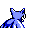

#041
Zubat
Poison
Forms colonies in perpetually dark places. Uses ultrasonic waves to identify and approach targets
Base stats Total 215
HP40
Attack45
Defense35
Speed55
Special40
Details
- Species
- Bat
- Height
- 2'07"
- Weight
- 17.0 lb
- Catch rate
- 255
- Base exp
- 54
- Growth
- Medium Fast
Level-up moves
LevelMoveType
StartLeech LifeBug
Lv 9Poison StingPoison
Lv 12Gust
Lv 15HypnosisPsychic
Lv 18SupersonicNormal
Lv 21Wing Attack
Lv 24BiteDark
Lv 25AcidPoison
Lv 38Sludge BombPoison
Evolution
Where to find
TM / HM
TM02 Razor WindTM04 CrunchTM06 ToxicTM07 Shadow BallTM09 Take DownTM10 Double-EdgeTM21 Mega DrainTM31 MimicTM32 Double TeamTM34 BideTM39 SwiftTM40 Sludge BombTM44 RestTM50 SubstituteHM02 Fly